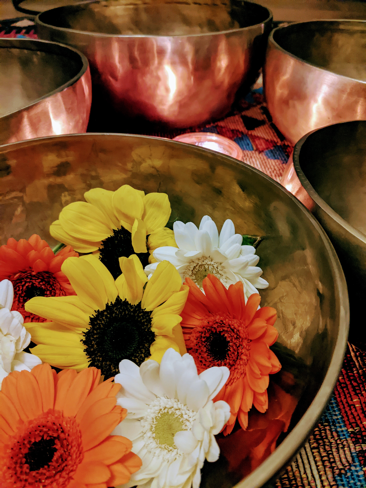

Bain Sonore
Cette bulle hors du tout permet à tous vos corps de s'ancrer plus en profondeur, de s'aligner et de s'élever.
Un bain sonore c'est avant tout une expérience qui vous transporte dans un autre monde. Un monde où tout est possible.
Les vibrations des différents instruments - koshis, bols de l'Himalaya, diapasons - entrent en résonnance avec vos différents corps et apportent de merveilleux bienfaits.
Les bienfaits des bains sonores sont nombreux:
- Diminue le stress, l'anxiété
- Apaise et équilibre les émotions
- Améliore le sommeil, la concentration
- Augmente la motivation, la créativité, l'intuition
- Aide le corps à se nettoyer, se réharmoniser, se réaligner
- Aide à lâcher prise, diminue les tensions mentales et musculaires
- Aide le corps à se rétablir suite à un traumatisme, à retourner à l'équilibre
- Stimule la circulation sanguine et énergétique, renforce le système immunitaire
- Permet une connexion plus forte entre son corps, son esprit et son soi supérieur, son âme

Les bains sonores peuvent durer de 30 min (60€) à 1h (90€), selon vos besoins et envies.
Ils peuvent être couplés avec des soins ayurvédques ou chamaniques pour potentialiser l'effet de ces pratiques.